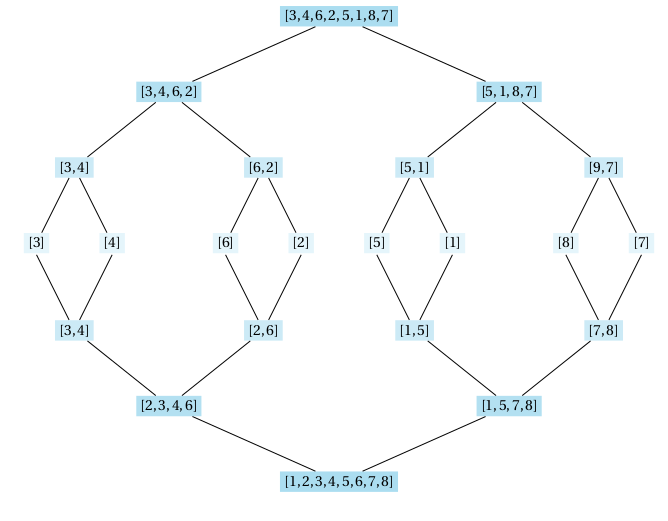
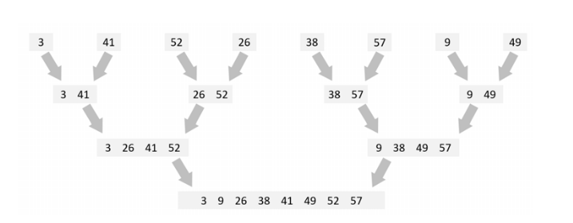

TD 20 correction
| Thème 5 : Algorithmique |
|---|
| 20 | Diviser pour régner |
|---|
Le principe⚓︎
Diviser pour régner
La stratégie « diviser pour régner » consiste à
-
Diviser : Décomposer un problème en un ou plusieurs sous-problèmes de même nature mais plus petits.
-
Régner : Résoudre les sous-problèmes, généralement de manière récursive, jusqu'à ce qu'on arrive aux cas d'arrêt : des sous-problèmes que l'on sait résoudre immédiatement.
-
Combiner : Construire la solution au problème initial à partir des solutions des sous-problèmes.
Diviser pour régner : Palindromes⚓︎
Palindromes
Une chaîne est un palindrome si elle peut se lire de la même manière dans les deux sens, de gauche à droite et de droite à gauche. Par exemple :
- "ressasser, "radar", "12321" sont des palindromes ;
- "nsi", "toto" n’en sont pas.
On se propose d’écrire une fonction récursive est_palindrome(ch) qui renvoie Vrai si la chaine ch passée en argument est un palindrome et Faux sinon.
Partie A⚓︎
Une première version utilisant le slicing
On considère la chaîne suivante.
ch = "ressasser"
Question 1.
Quels slices permettent d’accéder :
- au premier caractère de ch ?
- au dernier caractère de ch ?
- à une chaîne privée du premier et du dernier caractères de ch.
Question 2.
En utilisant les slices, complétez la fonction suivante.
def est_palindrome(ch):
if len(ch) <= 1:
return ...
else:
return ...
Question 3.
Au moyen du mot clé assert, écrivez un bon jeu de tests pour cette fonction. Vérifiez que les tests passent avec succès.
Question 4.
Expliquez pourquoi cet algorithme est un exemple de la méthode diviser pour régner.
Question 5.
Utiliser Python tutor, exécutez en mode pas à pas le déroulement des appels récursifs de cette fonction pour la chaîne "ressasser".
Si la chaîne de départ est un palindrome de longueur n, combien de comparaisons sont effectuées ? En déduite le coût en temps de cet algorithme (sa complexité) dans le pire des cas.
Question 6.
Le slicing a un coût en mémoire caché. En effet, chaque appel ch[1:-1] induit la création d’une nouvelle chaîne qu’il faut stocker en mémoire. On peut le voir facilement avec Python tutor.
Dans le pire cas, pour une chaîne de longueur n au départ, combien de chaînes doivent être créées pour répondre au problème ?
Partie B⚓︎
Une deuxième version améliorée⚓︎
En réalité, on peut se passer de la création de toutes ces chaînes intermédiaires en utilisant et en faisant varier (comme pour la recherche dichotomique) les indices g (pour gauche) et d (pour droite) des caractères restants.
Voici une fonction palindrome(ch, g, d) qui renvoie True si la chaine ch[g..d] (c’est-à-dire la chaîne ch limitée à ses caractères entre les positions g et d) est un palindrome et False sinon.
def palindrome(ch, g, d):
if d - g < 1:
return True
else:
return ch[g] == ch[d] and palindrome(ch, g+1, d-1)
Question 7.
Quel appel à cette fonction faut-il faire pour tester si mot est un palindrome ?
mot = "ressasser"
# à compléter par le bon appel :
Pour éviter cette écriture un peu lourde, il suffit de créer une autre fonction est_palindrome2(ch) qui est chargée de lancer le premier appel à la fonction récursive palindrome.
Complétez le code de la fonction est_palindrome2(ch).
Question 8.
def est_palindrome2(ch):
# à compléter
pass
La fonction est_palindrome2 est appelée une fonction d’interface qui permet d’ajouter des arguments à une fonction sans que l’utilisateur ait à s’en préoccuper.
Question 9.
Vérifiez avec Python tutor qu’avec cette version, il n’y a qu’une chaîne ch à mémoriser (celle de départ). On obtient un algorithme avec un coût mémoire inférieur à la première version.
Le tri fusion⚓︎
Principe⚓︎
 Voici un deuxième exemple d'application de cette stratégie : le tri
fusion. On doit cet algorithme à
John Von Neumann.
Voici un deuxième exemple d'application de cette stratégie : le tri
fusion. On doit cet algorithme à
John Von Neumann.
On dispose d'une liste d'entiers que l'on veut trier dans l'ordre croissant.
-
On scinde cette liste en deux listes de longueurs « à peu près égales ».
-
On trie ces listes en utilisant... le tri fusion. (on tri donc le manière récursive)
-
On fusionne les deux listes triées par ordre croissant pour ne plus en obtenir qu'une.
Un exemple

Une chorégraphie du tri fusion
Code correspondant⚓︎
Voici comment coder le tri fusion :
On a tout d'abord besoin d'une fonction scinde qui renvoie la première moitié et la deuxième moitié de la liste qu'on
lui passe en argument.
def scinde(lst: list) -> tuple:
return lst[:len(lst) // 2], lst[len(lst) // 2:]
Ensuite, on a besoin d'une fonction fusion qui, étant donnée deux listes triées, les fusionne.
def fusion(lst1: list, lst2: list) -> list:
if not lst1 or not lst2: # si l'une des listes est vide
return lst1 or lst2 # alors on renvoie l'autre
else:
a, b = lst1[0], lst2[0]
if a < b : # sinon on compare leurs premiers éléments
return [a] + fusion(lst1[1:], lst2) # on place le plus petit en tête et on fusionne le reste
elif b > a:
return [b] + fusion(lst1, lst2[1:])
else : # dans le cas où les 2 éléments sont égaux on peut les placer tous les deux
return [a, b]+ fusion(lst1[1:], lst2[1:])
Enfin, la fonction tri_fusion.
def tri_fusion(lst: list) -> list:
if len(lst) < 2: # cas d'arrêt
return lst
lst1, lst2 = scinde(lst) # sinon on scinde
return fusion(tri_fusion(lst1), tri_fusion(lst2)) # et on fusionne les sous-listes triées
Complexité du tri fusion⚓︎
➡ La partie “diviser” est de complexité constante.
Pour pouvoir majorer le nombre maximum d’itérations, si le tableau contient P valeurs, et si on a un entier \(n\) tel que \(P \leq 2^n\) , alors puisque qu’à chaque itération, on sélectionne une moitié de ce qui reste :
- au bout d’une itération, une moitié de tableau aura au plus \(\dfrac{2^n}{2} = 2^{n−1}\) éléments,
- un quart aura au plus \(2^{n−2}\)
- et au bout de \(k\) itérations, la taille de ce qui reste à étudier est de taille au plus \(2^{n−k}\).
- En particulier, si l’on fait \(n\) itérations, il reste au plus \(2^{n−n} = 1\) valeur du tableau à examiner. On est sûr de s’arrêter cette fois-ci
On a donc montré que si l’entier \(n\) vérifie \(P \leq 2^n\) , alors l’algorithme va effectuer au plus \(n\) itérations.
La plus petite valeur est obtenue pour \(n = log_2 P\).
Ainsi, la complexité de la fonction est de l’ordre du logarithme de la longueur de la liste (\(O(log_2(n))\)).
\(log_2(n)\).
Exemple
Pour un tableau de taille n = 64 il faut :
64/2=32,32/2=16,16/2=8,8/2=4,4/2=2,2/2=1 :
6 étapes.
\(2^6=64\).
Comme toujours quand on peut séparer le tableau en deux, la méthode diviser pour régner permet de ne réaliser que \(log_2 n\) étapes. Mais…
➡ Complexité fusion
La partie fusion utilise une boucle qui parcourt plusieurs tableaux en même temps.
On réalise à chaque étape la même chose :
- lire deux valeurs,
- comparer,
- ranger la plus petite.
La complexité est linéaire.
Notons \(n\) la taille de la liste à trier et considérons comme seule opération élémentaire le fait d'accéder à un élément d'une liste.
Complexité du tri fusion
Le nombre d'opérations élémentaires nécessaires pour trier une liste de taille \(n\) par la méthode du tri fusion est de l'ordre de \(n\times\log_2 n\).
Application : Exercices de l'Epreuve Pratique⚓︎
Sujet 23 - Exercice 2
La fonction fusion prend deux listes L1, L2 d’entiers triées par ordre croissant et les fusionne en une liste triée L12 qu’elle renvoie.
Le code Python de la fonction est
def fusion(L1,L2):
n1 = len(L1)
n2 = len(L2)
L12 = [0]*(n1+n2)
i1 = 0
i2 = 0
i = 0
while i1 < n1 and ... :
if L1[i1] < L2[i2]:
L12[i] = ...
i1 = ...
else:
L12[i] = L2[i2]
i2 = ...
i += 1
while i1 < n1:
L12[i] = ...
i1 = i1 + 1
i = ...
while i2 < n2:
L12[i] = ...
i2 = i2 + 1
i = ...
return L12
Compléter le code.
Exemple :
>>> fusion([1,6,10],[0,7,8,9])
[0, 1, 6, 7, 8, 9, 10]
Recherche dichotomique⚓︎
EX : Recherche dichotomique
-
Expliquer pourquoi la recherche dichotomique d'un élément dans une liste d'entiers triés dans l'ordre croissant peut être vue comme un exemple de stratégie « diviser pour régner ».
-
Programmer la recherche dichotomique de manière récursive.
Pour savoir si un élément appartient à la liste, on regarde celui qui est «à peu près au milieu». Si c'est le bon c'est terminé, sinon on fait de même avec la sous-liste des éléments précédents et avec celle des éléments suivants.
def rech_dicho(lst, elt):
n = len(lst)
if n < 2:
return elt in lst
elif lst[n // 2] == elt:
return True
else:
return rech_dicho(lst[:n // 2], elt) if lst[n // 2] > elt else rech_dicho(lst[n // 2 + 1:], elt)
Exercices BAC⚓︎
Sujet n°1 : France 2021
Cet exercice porte sur l’algorithme de tri fusion, qui s’appuie sur la méthode dite de « diviser pour régner ».
Question 1
a. Quel est l’ordre de grandeur du coût, en nombre de comparaisons, de l’algorithme de tri fusion pour une liste de longueur ?
b. Citer le nom d’un autre algorithme de tri. Donner l’ordre de grandeur de son coût, en nombre de comparaisons, pour une liste de longueur .
Comparer ce coût à celui du tri fusion. Aucune justification n’est attendue.
a. \(O(nlog_2(n))\)
b. L’algorithme de tri par insertion a une complexité en temps dans le pire des cas en O(n2).
L’algorithme du tri par insertion est moins efficace que l’algorithme de tri fusion.
L’algorithme de tri fusion utilise deux fonctions moitie_gauche et moitie_droite qui prennent en argument une liste L et renvoient respectivement :
- la sous-liste de L formée des éléments d’indice strictement inférieur à len(L)//2 ;
- la sous-liste de L formée des éléments d’indice supérieur ou égal à len(L)//2.
On rappelle que la syntaxe a//b désigne la division entière de a par b.
Par exemple,
>>> L = [3, 5, 2, 7, 1, 9, 0]
>>> moitie_gauche(L)
[3, 5, 2]
>>> moitie_droite(L)
[7, 1, 9, 0]
>>> M = [4, 1, 11, 7]
>>> moitie_gauche(M)
[4, 1]
>>> moitie_droite(M)
[11, 7]
L’algorithme utilise aussi une fonction fusion qui prend en argument deux listes triées L1 et L2 et renvoie une liste L triée et composée des éléments de L1 et L2.
On donne ci-dessous le code python d’une fonction récursive tri_fusion qui prend en argument une liste L et renvoie une nouvelle liste triée formée des éléments de L.
def tri_fusion(L):
n = len(L)
if n<=1 :
return L
print(L)
mg = moitie_gauche(L)
md = moitie_droite(L)
L1 = tri_fusion(mg)
L2 = tri_fusion(md)
return fusion(L1, L2)
Question 2
Donner la liste des affichages produits par l’appel suivant.
tri_fusion([7, 4, 2, 1, 8, 5, 6, 3])
Voici l’affichage obtenu :
[7, 4, 2, 1, 8, 5, 6, 3]
[7, 4, 2, 1]
[7,4]
[2, 1]
[8, 5, 6, 3]
[8, 5]
[6, 3]
[1, 2, 3, 4, 5, 6, 7, 8]
On s’intéresse désormais à différentes fonctions appelées par tri_fusion, à savoir moitie_droite et fusion.
Question 3
Ecrire la fonction moitie_droite.
def moitie_droite(L):
n = len(L)
deb = n//2
tab = []
for i in range(deb,n):
tab.append(L[i])
return tab
Question 4
On donne ci-dessous une version incomplète de la fonction fusion.
1 2 3 4 5 6 7 8 9 10 11 12 13 14 15 16 17 18 19 20 | |
- Si aucun des deux indices n’est valide, la boucle while est interrompue ;
- Si i1 n’est plus un indice valide, on va ajouter à L les éléments de L2 à partir de l’indice i2 ;
- Si i2 n’est plus un indice valide, on va ajouter à L les éléments de L1 à partir de l’indice i1 ;
- Sinon, le plus petit élément non encore traité est ajouté à L et on décale l’indice correspondant.
Écrire sur la copie les instructions manquantes des lignes 17 à 22 permettant d’insérer dans la liste L les éléments des listes L1 et L2 par ordre croissant.
def fusion(L1, L2):
L=[]
n1 = len(L1)
n2 = len(L2)
i1 = 0
i2 = 0
while i1<n1 or i2<n2:
if i1>=n1:
L.append(L2[i2])
i2 = i2+1
elif i2>=n2:
L.append(L1[i1])
i1=i1+1
else :
e1 = L1[i1]
e2 = L2[i2]
if e1 > e2:
L.append(e2)
i2 = i2 + 1
else :
L.append(e1)
i1 = i1 + 1
return L
Sujet n°2 : BAC Polynésie 2021
Cet exercice traite principalement du thème « algorithmique, langages et programmation ». Le but est de comparer le tri par insertion (l'un des algorithmes étudiés en 1ère NSI pour trier un tableau) avec le tri fusion (un algorithme qui applique le principe de « diviser pour régner »).
Partie A : Manipulation d’une liste en Python⚓︎
Question A.1
Donner les affichages obtenus après l’exécution du code Python suivant.
notes = [8, 7, 18, 14, 12, 9, 17, 3]
notes[3] = 16
print(len(notes))
print(notes)
>>> 8
>>> [8, 7, 18, 16, 12, 9, 17, 3]
`!!! fabquestion "Question A.2" === "Enoncé" Écrire un code Python permettant d'afficher les éléments d'indice 2 à 4 de la liste notes.
=== "Solution"
```python
for i in range(2,5):
print(notes[i])
```
Partie B : Tri par insertion⚓︎
Le tri par insertion est un algorithme efficace qui s'inspire de la façon dont on peut trier une poignée de cartes. On commence avec une seule carte dans la main gauche (les autres cartes sont en tas sur la table) puis on pioche la carte suivante et on l'insère au bon endroit dans la main gauche.
Question B.1
Voici une implémentation en Python de cet algorithme. Recopier et compléter les lignes 6 et 7 surlignées (uniquement celles-ci).
1 2 3 4 5 6 7 8 9 | |
def tri_insertion(liste):
""" trie par insertion la liste en paramètre """
for indice_courant in range(1, len(liste)):
element_a_inserer = liste[indice_courant]
i = indice_courant - 1
while i >= 0 and liste[i] > element_a_inserer:
liste[i+1] = liste[i]
i=i-1
liste[i + 1] = element_a_inserer
On a écrit dans la console les instructions suivantes :
notes = [8, 7, 18, 14, 12, 9, 17, 3]
tri_insertion(notes)
print(notes)
[3, 7, 8, 9, 12, 14, 17, 18]
On s'interroge sur ce qui s’est passé lors de l’exécution de tri_insertion(notes).
Question B.2
Donner le contenu de la liste notes après le premier passage dans la boucle for.
>>> [7, 8, 18, 14, 12, 9, 17, 3]
Question B.3
Donner le contenu de la liste notes après le troisième passage dans la boucle for.
>>> [7, 8, 14, 18, 12, 9, 17, 3]
Partie C : Tri fusion⚓︎
L'algorithme de tri fusion suit le principe de « diviser pour régner ».
(1) Si le tableau à trier n’a qu’un élément, il est déjà trié.
(2) Sinon, séparer le tableau en deux parties à peu près égales.
(3) Trier les deux parties avec l’algorithme de tri fusion.
(4) Fusionner les deux tableaux triés en un seul tableau.
source : Wikipedia
Question C.1
Cet algorithme est-il itératif ou récursif ? Justifier en une phrase.
récursif : à l’étape (3) l’algorithme de tri fusion s’appelle lui-même.
Question C.2
Expliquer en trois lignes comment faire pour rassembler dans une main deux tas déjà triés de cartes, la carte en haut d'un tas étant la plus petite de ce même tas ;
la deuxième carte d'un tas n'étant visible qu'après avoir retiré la première carte de ce tas.
- Comparer les cartes du haut des 2 tas.
- Placer la carte de valeur plus faible dans la main.
- Recommencer l’étape 1 jusqu’à épuisement des tas.
À la fin du procédé, les cartes en main doivent être triées par ordre croissant.
Une fonction fusionner a été implémentée en Python en s'inspirant du procédé de la question précédente.
Elle prend quatre arguments : la liste qui est en train d'être triée, l'indice où commence la sous-liste de gauche à fusionner, l'indice où termine cette sousliste, et l'indice où se termine la sous-liste de droite.
Question C.3
Voici une implémentation de l’algorithme de tri fusion. Recopier et compléter les lignes 8, 9 et 10 surlignées (uniquement celles-ci).
1 2 3 4 5 6 7 8 9 | |
from math import floor
def tri_fusion (liste, i_debut, i_fin):
""" trie par fusion la liste en paramètre depuis i_debut jusqu’à i_fin """
if i_debut < i_fin:
i_partage = floor((i_debut + i_fin) / 2) # milieu pour diviser le tableau en deux moitiés
tri_fusion(liste, i_debut, i_partage) # Appel tri_fusion pour 1ère moitié du tableau
tri_fusion(liste, i_partage + 1, i_fin) # Appel tri_fusion pour 2ème moitié du tableau
fusionner(liste, i_debut, i_fin, i_partage) # Fusion des deux moitiés triées
Question C.4
Expliquer le rôle de la première ligne du code de la question 3.
permet d’importer la fonction floor() du module math utilisée à la ligne 7
Partie D : Comparaison du tri par insertion et du tri fusion⚓︎
Voici une illustration des étapes d’un tri effectué sur la liste [3, 41, 52, 26, 38, 57, 9, 49].

[:.center}]Question D.1
Quel algorithme a été utilisé : le tri par insertion ou le tri fusion ? Justifier.
tri par fusion : à chaque étape, le tri se fait par fusion de 2 tas déjà triés
Question D.2
Identifier le tri qui a une complexité, dans le pire des cas, en O(n2) et identifier le tri qui a une complexité, dans le pire des cas, en O(n log2 n).
Remarque : n représente la longueur de la liste à trier.
- tri par insertion : \(O(n^2)\)
- tri par fusion : \(O(n.log_2 n)\)
Question D.3
Justifier brièvement ces deux complexités.
- Le tri par insertion utilise 2 boucles imbriquées, soit dans le pire des cas ~ \(1/2n(n+1)\) opérations.
- Le tri par fusion, divise la liste à trier par 2 pour chaque itérations, soit ~ \(log_2 n\) opérations.
Sujet n°3 : FRANCE CANDIDAT LIBRE SUJET 1
Cet exercice traite de manipulation de tableaux, de récursivité et du paradigme « diviser pour régner ».
Dans un tableau Python d'entiers tab, on dit que le couple d’indices (݅,݆) forme une inversion lorsque ݅ < ݆ et tab[i] > tab[j]. On donne ci-dessous quelques exemples.
- Dans le tableau [1, 5, 3, 7], le couple d’indices (1,2) forme une inversion car 5> 3.
Par contre, le couple (1,3) ne forme pas d'inversion car 5<7. Il n’y a qu’une inversion dans ce tableau. - Il y a trois inversions dans le tableau [1, 6, 2, 7, 3], à savoir les couples d'indices (1, 2), (1, 4) et (3, 4).
- On peut compter six inversions dans le tableau [7, 6, 5, 3] : les couples d'indices (0, 1), (0, 2), (0, 3), (1, 2), (1, 3) et (2, 3).
On se propose dans cet exercice de déterminer le nombre d’inversions dans un tableau quelconque.
Questions préliminaires
Question 1
Expliquer pourquoi le couple (1, 3) est une inversion dans le tableau [4, 8, 3, 7].
À l’indice 1 du tableau on trouve 8, à l’indice 3 on trouve 7.
Nous avons 1 < 3 alors que 8 > 7, nous avons donc bien une inversion
Question2
Justifier que le couple (2, 3) n’en est pas une.
À l’indice 2 du tableau on trouve 3, à l’indice 3 on trouve 7.
Nous avons 2 < 3 et 3 < 7, nous n’avons donc pas d’inversion
Partie A : Méthode itérative⚓︎
Le but de cette partie est d’écrire une fonction itérative nombre_inversion qui renvoie le nombre d’inversions dans un tableau. Pour cela, on commence par écrire une fonction fonction1 qui sera ensuite utilisée pour écrire la fonction nombre_inversion.
Question A.1
On donne la fonction suivante.
def fonction1(tab, i):
nb_elem = len(tab)
cpt = 0
for j in range(i+1, nb_elem):
if tab[j] < tab[i]:
cpt += 1
return cpt
a. Indiquer ce que renvoie la fonction1(tab, i) dans les cas suivants.
- Cas n°1 : tab = [1, 5, 3, 7] et i = 0.
- Cas n°2 : tab = [1, 5, 3, 7] et i = 1.
- Cas n°3 : tab = [1, 5, 2, 6, 4] et i = 1.
b. Expliquer ce que permet de déterminer cette fonction.
a.
- cas n°1 : 0
- cas n°2 : 1
- cas n°3 : 2
b.
Question A.2
En utilisant la fonction précédente, écrire une fonction nombre_inversion(tab) qui prend en argument un tableau et renvoie le nombre d’inversions dans ce tableau.
On donne ci-dessous les résultats attendus pour certains appels.
>>> nombre_inversions([1, 5, 7])
0
>>> nombre_inversions([1, 6, 2, 7, 3])
3
>>> nombre_inversions([7, 6, 5, 3])
6
def nombre_inversions(tab):
nb_inv = 0
n = len(tab)
for i in range(n-1):
nb_inv = nb_inv + fonction1(tab, i)
return nb_inv
Question A.3
Quelle est l’ordre de grandeur de la complexité en temps de l'algorithme obtenu ?
Aucune justification n'est attendue.
L’ordre de grandeur de la complexité en temps de l’algorithme est \(O(n^2)\)
Partie B : Méthode récursive⚓︎
Le but de cette partie est de concevoir une version récursive de la fonction nombre_inversion.
On définit pour cela des fonctions auxiliaires.
Question B.1
Donner le nom d’un algorithme de tri ayant une complexité meilleure que quadratique.
Dans la suite de cet exercice, on suppose qu’on dispose d'une fonction tri(tab) qui prend en argument un tableau et renvoie un tableau contenant les mêmes éléments rangés dans l'ordre croissant.
Le tri fusion a une complexité en \(O(n.log_2 (n))\)
Question B.2
Écrire une fonction moitie_gauche(tab) qui prend en argument un tableau tab et renvoie un nouveau tableau contenant la moitié gauche de tab. Si le nombre d'éléments de tab est impair, l'élément du centre se trouve dans cette partie gauche.
On donne ci-dessous les résultats attendus pour certains appels.
>>> moitie_gauche([])
[]
>>> moitie_gauche([4, 8, 3])
[4, 8]
>>> moitie_gauche ([4, 8, 3, 7])
[4, 8]
def moitie_gauche(tab):
n = len(tab)
nvx_tab = []
if n==0:
return []
mil = n//2
if n%2 == 0:
lim = mil
else :
lim =mil+1
for i in range(lim):
nvx_tab.append(tab[i])
return nvx_tab
une autre possibilité un peu plus concise :
def moitie_gauche(tab):
return [tab[i] for i in range(len(tab)//2+len(tab)%2)]
Dans la suite, on suppose qu’on dispose de la fonction moitie_droite(tab) qui renvoie la moitié droite sans l’élément du milieu.
Question B.3
On suppose qu’une fonction nb_inv_tab(tab1, tab2)a été écrite. Cette fonction renvoie le nombre d’inversions du tableau obtenu en mettant bout à bout les tableaux tab1 et tab2, à condition que tab1 et tab2 soient triés dans l’ordre croissant.
On donne ci-dessous deux exemples d’appel de cette fonction :
>>> nb_inv_tab([3, 7, 9], [2, 10])
3
>>> nb_inv_tab([7, 9, 13], [7, 10, 14])
3
En utilisant la fonction nb_inv_tab et les questions précédentes, écrire une fonction récursive nb_inversions_rec(tab) qui permet de calculer le nombre d'inversions dans un tableau. * Cette fonction renverra le même nombre que nombre_inversions(tab) de la partie A. On procédera de la façon suivante :
- Séparer le tableau en deux tableaux de tailles égales (à une unité près).
- Appeler récursivement la fonction nb_inversions_rec pour compter le nombre d’inversions dans chacun des deux tableaux.
- Trier les deux tableaux (on rappelle qu'une fonction de tri est déjà définie).
- Ajouter au nombre d'inversions précédemment comptées le nombre renvoyé par la fonction nb_inv_tab avec pour arguments les deux tableaux triés.
def nb_inversions_rec(tab):
if len(tab) > 1:
tab_g = moitie_gauche(tab)
tab_d = moitie_droite(tab)
return nb_inv_tab(tri(tab_g), tri(tab_d))
nb_inversions_rec(tab_g) + nb_inversions_rec(tab_d)
else:
return 0
ou
def nb_inversions_rec(tab : list, n : int = 0) -> int:
""" renvoie le même nombre que nombre_inversions(tab) de la partie A. """
if len(tab) <= 1:
return 0
else:
#Séparer le tableau en deux tableaux de tailles égales (à une unité près).
gauche = moitie_gauche(tab)
droite = moitie_droite(tab)
#Compter le nombre d’inversions dans chacun des deux tableaux.
n = nb_inv_tab(sorted(gauche), sorted(droite))
#Appeler récursivement la fonction nb_inversions_rec
return n + nb_inversions_rec(gauche, n) + nb_inversions_rec(droite, n)